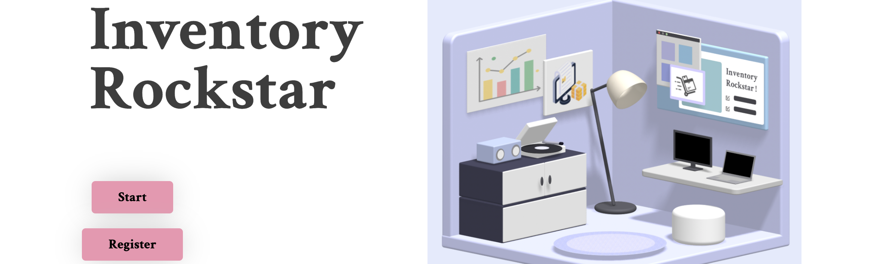
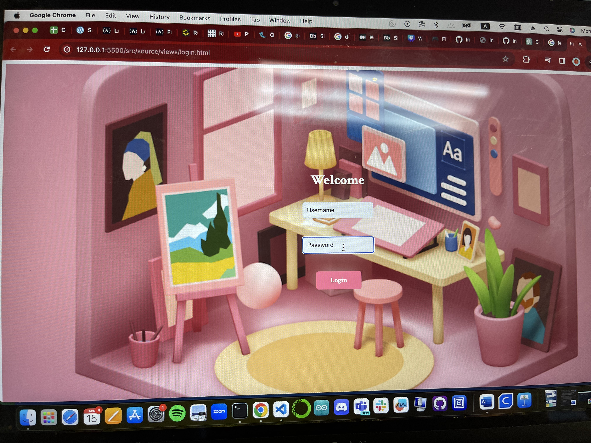
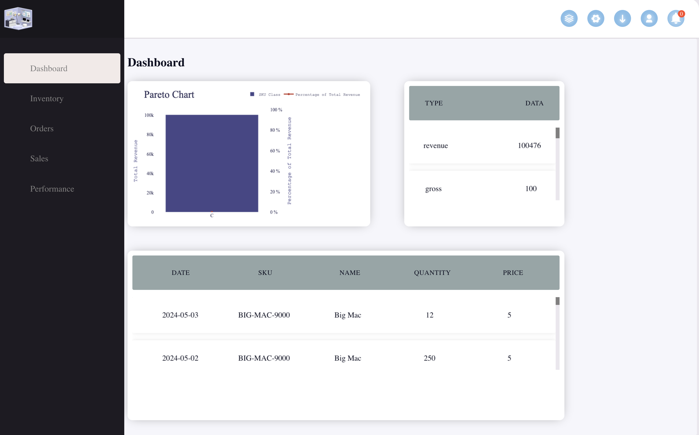
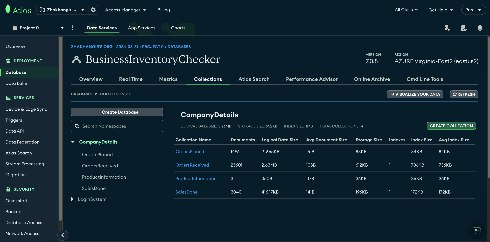

Inventory Optimizer
Desktop Application
Software Engineer, Technical Lead
Project Description
Inventory Optimizer is a desktop application for small retail businesses that combines inventory tracking, predictive analytics, and business reporting. The system monitors inventory in real time, uses past sales data to estimate future demand, and helps users make better reorder decisions.
This was a software engineering 5-member team project, and I served as a technical lead while helping connect the frontend, backend, database, and predictive components into one working application.
My Responsibilities
- Developed APIs that connected predictive models with the frontend and backend using Python, Node.js, and Electron.js.
- Implemented hash-based authentication and supported full application data flow.
- Configured MongoDB to store inventory and predictive data from more than 40,000 data points.
- Tested and debugged the seven-page frontend in HTML and JavaScript.
Skills I Learned
- Full-stack desktop application architecture.
- Database-backed predictive systems.
- Authentication design and API integration.
- Technical leadership in a team software project.
Project Links
Photos



